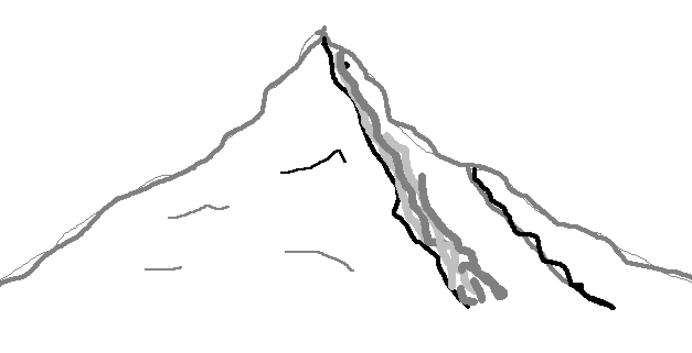

-

What we lose in the pursuit of insight
-
Midterm Sentiment Analysis
Tracking weekly sentiment toward candidates in six 2026 Senate races, using X posts classified by Jev
-
FedAwards
Explore federal contract awards by recipient, with searchable records and charts
-
Chronos
Discover events happening around the world at the same time
-
Unfolding Pathways of Hen Egg-White Lysozyme in Ethanol
Molecular simulations of how pH and ethanol affect protein unfolding.
The Journal of Physical Chemistry B